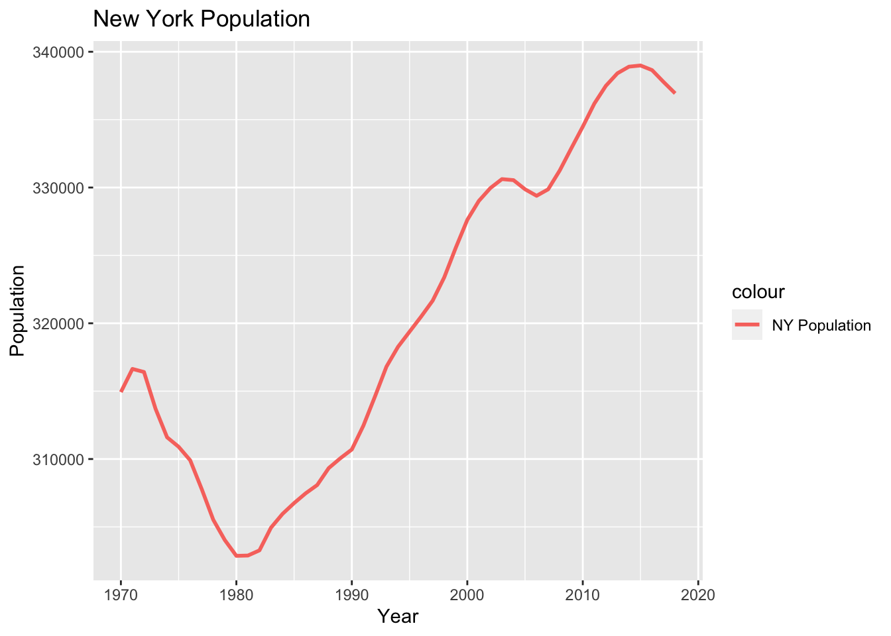
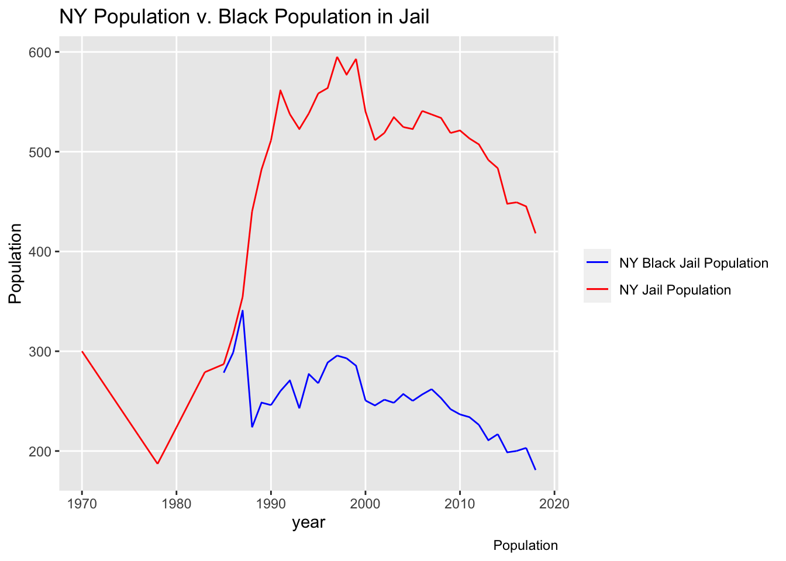
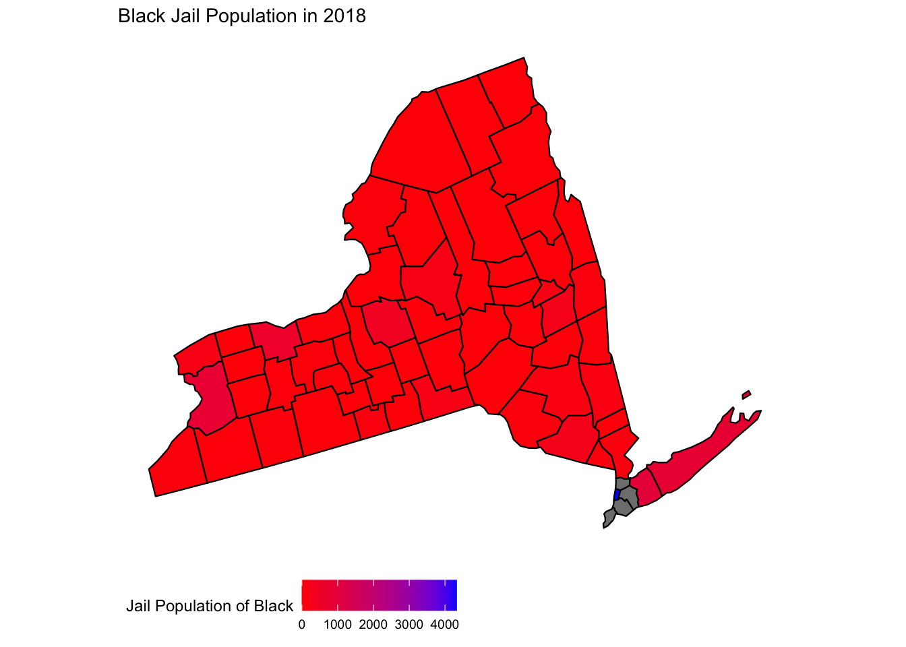

For this assignment, I chose to focus mainly on the crime rates in NY, specifically towards Black Americans. I had decided to analyze this group of people because of the stigmatizations towards Black Americans and wanted to see for myself, using data provided by Vera, the jail population specific to NY. I chose to analyze the population of New York for proportionality, the rate of jail specific to Black Americans, the county in New York, and the population of New York aged 15 - 64 to combat the stigmatizations towards Black Americans.
 I created this chart to illustrate how the population of New York has changed over the 40 years. Although we do see a slight dip in the 80’s, we see an exponential rise in the following years, making note of how the population of New York has exponentially increased since the 1900’s. I created this graph to show how the population in New York has increased exponentially; resulting in a possible environment more susceptible to crime.
## Warning: Removed 870 row(s) containing missing values (geom_path). My second graph shows the comparisons of Black Jail Population in relationship to the population of all the other races. We see that the first 10-15 years of data are missing but from 1983, we see data showing us that the crime rate of Black Americans is close to a third of the total Jail population, debunking the misconception of Black Americans making up the majority of the crime rates in New York.

The final visualization shows a map of New York, and the population of jailed Black Americans. The color coordinated map shows us that Black Americans make up the lower 25%, with crime rates spiking in the Chenango County in New York.